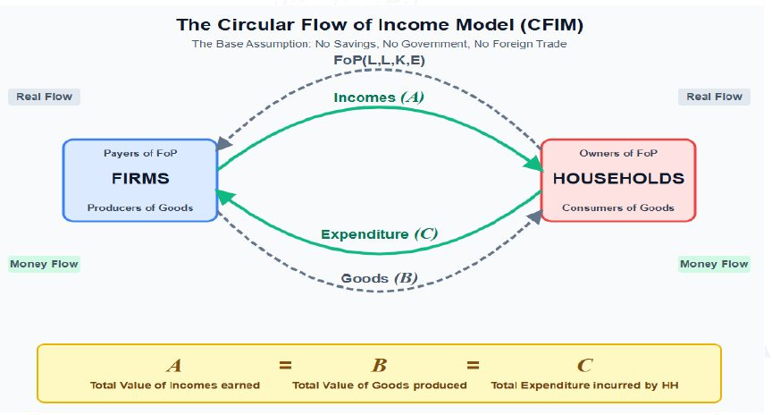
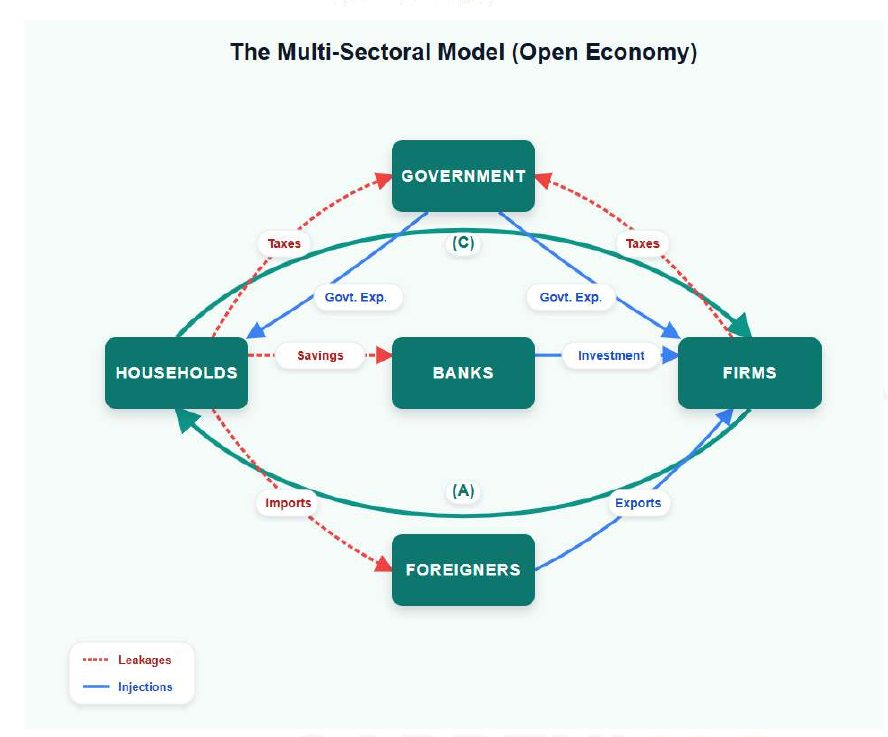

The handout calls this chapter the formal start after Chapter 4: final versus intermediate goods, GCF and depreciation (CFC for NDP and NNP) are used here.
Economy · GS Foundation · Chapter 5
National Income Accounting: GDP, GVA, GNP and Alternatives
Handout only: no class slidesHandout pages 1-363 Prelims PYQs quoted
The circular flow of income and the multi-sectoral model, the three approaches (income, expenditure, production), what GDP means word by word, economic territory, GNP and NFIA, the GVA method, nominal versus real GDP and the base year, market price versus basic price versus factor cost, how India estimates GDP (SNA 2008, MCA-21, labour input, the 2022-23 base year), the limitations of GDP, HDI and the other alternatives, and the full family of national-income measures.
Chapter map#
- National income
Circular flow
- CFIM: A = B = C no S, G, trade
- MSM: dynamic equilibrium A chases C, B chases A
- Leakages S, T, M
- Injections I, X, G
Three approaches
- Income: R + W + P + Int
- Expenditure: C + G + I + X − M
- Production: Σ value added
GDP and GNP
- Final, produced, priced, in territory
- Enclaves, ships, rigs
- GNP = GDP + NFIA
GVA method
- VA = output − inputs
- GVA = GDP
- Wheat example: ₹2.2 lakh
Prices
- Nominal vs real
- Base year: similar and stable base effect
- MP, BP, FC product vs production taxes
Estimating in India
- SNA 2008, MCA-21 (2015)
- 8 sectors
- Labour input method workers × VA/worker
- Base 2022-23, double deflation
Limits and alternatives
- Composition, inequality, unpriced work
- Externalities, informality, inflation
- HDI, IHDI, GDI, GII, GPI, GNH, Green GDP, GHI
Measures
- PCI, GNI per capita
- NI = NNP at FC
- PI and PDI
Exam lens: priority and PYQs#
Prelims PYQs quoted in the handout
| Year | What was asked | Answer in handout | Where covered / trap |
|---|---|---|---|
| 2018 | Increase in absolute and per capita real GNP do not connote a higher level of development, if… | (c) poverty and unemployment increase | Section 11 (limitations of GDP: inequality, well-being) and Chapters 1 and 3 |
| 2015 | A decrease in the tax-to-GDP ratio indicates: 1. slowing economic growth rates 2. less equitable distribution of national income | (a) 1 only | Handout gives only the answer. Statement 2 is the trap |
| 2015 | Real GDP growth has steadily increased in the last decade? GDP at market prices (in rupees) has steadily increased in the last decade? | (b) 2 only | Section 8: nominal GDP rises with prices; real growth does not rise steadily |
What the handout stresses
| Signal in the handout | Where | Why it matters |
|---|---|---|
| A = B = C: income, production and expenditure are equal over a year (dynamic equilibrium) | Sections 2-3 | The base of all three approaches |
| GDP = GVA + net product taxes; GVA is at basic price | Sections 7 and 9 | Appears again as a “headline” formula |
| MP, BP and FC: product taxes versus production taxes | Section 9 | The handout builds this carefully: volume-based versus lump-sum |
| Production approach is given primacy; “discrepancy” balances the expenditure side | Section 10 | Statement-type question |
| 2022-23 new base year; double deflation; SUT (early 2026 changes) | Section 10 | Current-affairs hook inside the handout |
| Eight alternatives to GDP, each with one defining feature | Section 12 | Match-the-pair questions |
1 · What national income accounting is for#
Accounting is the systematic recording, classification and summarising of incomes. National sets the boundary: either the income earned in the nation (irrespective of who earns it) or the income earned by the nationals (irrespective of where). Income is strictly the reward paid for the Factors of Production: rent for land, wages for labour, interest for capital, profit for entrepreneurship.
Without national accounts the government, the central bank and citizens are “driving blind”: NIA is the economy’s dashboard. It cannot be measured by asking 1.4 billion people what they earn (people lie, forget, and much of the economy is informal), so the handout builds the idea in three steps: a basic model (the “tree’s shadow”), an advanced model (dropping unrealistic assumptions) and the real world (the methods used in India today).
2 · Circular flow of income model (CFIM)#
Two entities only: households (own all factors of production and supply them) and firms (use them to produce and sell goods back).

The three flows
| Label | Meaning |
|---|---|
| A · total incomes | Total payments by firms to households for factors: wages + rent + interest + profit |
| B · total production | Total value of all goods and services produced by firms |
| C · total expenditure | Total money spent by households on those goods |
CFIM states A = B = C. Households spend all they earn (A = C); firms keep no inventory (B = C); firms pay out all expenditure received as factor incomes (whatever is left is profit for the entrepreneurial households).
3 · Multi-sectoral model (MSM): injections and leakages#
CFIM assumes no saving, no inventory, no government, no foreign trade and no spending on capital goods. The MSM drops all of these and still arrives at A = B = C, but as a dynamic equilibrium: the three are always changing, may not be equal at a point in time, but readjust towards each other. “A will always chase C, and B will always chase A.” They are flow variables measured over a period (usually a year).

Leakages and injections
| Items | Effect | |
|---|---|---|
| Leakages (pull money out) | Savings (S), taxes (T), imports (M) | A, B or C shrinks |
| Injections (pump money in) | Investment (I), exports (X), government expenditure (G) | A, B or C expands |
- Saving example: households save, spend less; firms build inventory, produce less next cycle, use fewer factors, pay less income: C falls, then B, then A.
- Government is both a special household and a special firm. Spending on goods raises C, then B, then A. Hiring teachers and soldiers raises A, then C, then B. Savings go through banks to firms as investment, again lifting B, C and A. Export demand does the same.
- The economy grows only if injections exceed leakages. Over an accounting year the adjustments settle and A = B = C.
4 · The three approaches to measuring national income#
Three ways to measure the same total
| Approach | Formula | What it counts |
|---|---|---|
| Income (A) | TI = R + P + W + Int | All payments to factors of production in the domestic territory |
| Expenditure (C) | TI = AD = C + G + I + X − M | Expenditure received by domestic firms. Total spending is C + G + I + X, but each of C, G and I has a domestic and a foreign part; subtract the foreign parts (total imports M) to get what domestic firms received |
| Production (B) | TI = GDP = Σ VAᵢ = GVA | Total value of final goods and services produced in a year |
GDP word by word
Total value of all final goods and services produced in an economy over a given time
| Word | Meaning in the handout |
|---|---|
| Total | GDP is an aggregate: indifferent to merit versus demerit goods and to who owns the factors |
| Value | Not “worth” (which varies by person) but the objectively assessed price (transaction value). So only goods and services that have a price count: a parent cooking dinner for a child is excluded |
| Final | Only final goods. Their value already includes intermediates, so counting both is double counting |
| Produced | Counted in the year of production, not when or how often sold. Second-hand sales are not counted again, but new services (brokerage, registration, repair) are |
| Economic territory | Production inside the territory, irrespective of who produces (residents or foreigners) |
| Given period | A flow variable: a quarter or a year |
5 · Economic territory and GNP#
The economic territory (ET) mostly coincides with the political territory, except:
Where economic territory differs from the map
| Counts as India’s ET | Does NOT count as India’s ET |
|---|---|
| Enclaves abroad: Indian embassy in Washington, consulate in Dubai, research bases in Antarctica (Bharati, Maitri). Salaries of Indian staff are Indian GDP | Foreign enclaves in India: the American embassy in Chanakyapuri, a Japanese consulate in Mumbai: part of that country’s GDP |
| Ships and aircraft in international transit: an Air India flight over the Atlantic, a Shipping Corporation of India vessel in the Mediterranean | International organisations in India: UN, WHO, IMF offices are “extraterritorial”; their core production is excluded |
| Fishing vessels and oil rigs in international waters where India has exclusive exploitation rights (the EEZ) |
GNP is the total value of final goods and services produced by the nationals of a country (residents), wherever they are. The handout writes GNP = GDP + C − B where C is output by Indians abroad and B is output by foreigners in India, i.e. GNP = GDP + NFIA (net factor income from abroad). If nationals produce more outside than foreigners produce inside, GNP exceeds GDP.
6 · The GVA method: why GDP is counted by value added#
Using GDP = Σ Pᵢ·Qᵢ over final goods needs final goods to be separated from intermediates, which is nearly impossible: every producer sees their output as final. Instead, each producer’s value added is summed: VAᵢ = output value − input value. The total is GVA, which equals GDP.
The handout’s wheat-atta-bread-sandwich economy (all in rupees)
| Producer | Output | Inputs bought | Value added |
|---|---|---|---|
| Farmers (wheat) | 1,00,000 | 0 | 1,00,000 |
| Atta makers | 1,00,000 | 60,000 wheat | 40,000 |
| Bread makers | 1,00,000 | 60,000 atta | 40,000 |
| Sandwich makers | 1,00,000 | 60,000 bread | 40,000 |
| GDP = GVA | 2,20,000 |
Final goods check: wheat 40k + atta 40k + bread 40k + sandwiches 1L = ₹2.2 lakh. The two methods agree. The proof: the value of any final good equals the total value added by all producers with respect to that good; summing over all final goods gives the total value added by all producers.
7 · Nominal and real GDP; the base year#
Valuing output at different prices
| Nominal GDP | Real GDP | |
|---|---|---|
| Formula | P(current year) · Q(current year) | Q(current year) · P(constant base-year price) |
| Prices | Current prices | Constant (e.g. previous year or a base year) |
| Use | Size of the economy at today’s prices | Fair comparison of output across years, removing price changes. Economic growth = % change in real GDP |
A base year provides the constant prices. The handout says the choice dictates the officially measured growth rate. A good base year has two properties:
- Structurally similar to the present (the “time machine” problem): the basket produced and consumed should resemble today’s. Using 1980 would make telecom impossible to price (no smartphones or 5G then). So it should be as recent as possible, usually updated every 5 to 10 years.
- Stable (avoiding the base effect): if 2020, a Covid year, were the base, 2021’s recovery would look like 20-25% growth. A base year must be free of droughts, floods, pandemics, wars and policy shocks such as demonetisation. “It should be a boring year.”
8 · Market price, basic price and factor cost#
Because of government taxes and subsidies, what the buyer pays differs from what the seller receives. Output can be valued at three prices:
Three prices
| Price | Meaning | Relation |
|---|---|---|
| Market price (MP) | What the buyer pays: the sticker price. Closer to the consumer | MP = BP + product taxes − product subsidies |
| Basic price (BP) | What the seller actually wants to receive and keep: the “factory gate price” | BP = MP − product taxes + product subsidies |
| Factor cost (FC) | The cost attributable to the factors of production: what workers, landowners and capitalists take home. Closer to the producer | FC = BP − production taxes + production subsidies |
Product versus production taxes and subsidies
| Product T and S | Production T and S | |
|---|---|---|
| Basis | Levied or given on a quantity basis (per unit, per kg, per litre) | Independent of the volume of production: lump sum |
| Examples | GST (₹100 good + 18% GST = ₹118 market price, seller keeps ₹100); subsidies on LPG and fertilisers | Land revenue, stamp duties, a municipal factory licence fee; help for setting up in a backward region or for small-scale industry |
9 · How India estimates GDP#
How the NSO estimates GDP
Step 1 · The global rulebook: SNA 2008
UN System of National Accounts. India overhauled its GDP methodology in 2015 to align with it, so that numbers are comparable across years and countries
Step 2 · Slice the economy
NSO under MoSPI defines the economic territory and splits the economy into agriculture, industry and services, then 8 official GVA sectors
Step 3 · Choose the tool for each sector
Different methods for agriculture, organised corporate and unorganised sectors (below)
Step 4 · Extrapolate
Scale the sample up to the sub-sector using secondary data and assumptions that are reasonable, standardised and replicable
Step 5 · From GVA to headline GDP
Add the 8 sectors to get GVA at basic prices, then GDP(MP) = GVA(BP) + product taxes − product subsidies
Step 6 · Reality check
Production-method GDP and expenditure-method AD rarely match (different data sources). The NSO gives primacy to the production method and adds a balancing “discrepancy” to the expenditure side
The eight GVA sectors
| # | Sector |
|---|---|
| 1 | Agriculture, forestry and fishing |
| 2 | Mining and quarrying |
| 3 | Manufacturing |
| 4 | Electricity, gas, water supply and other utility services |
| 5 | Construction |
| 6 | Trade, hotels, transport, communication and broadcasting |
| 7 | Financial, real estate and professional services |
| 8 | Public administration, defence and other services |
Method by sector
| Sector | Method | Detail |
|---|---|---|
| Agriculture | Production method | Satellite data give total sown area; multiply by yield per hectare; multiply by mandi prices to get gross value |
| Organised corporate | Value added method using MCA-21 (Ministry of Corporate Affairs database) | Every registered company uploads audited balance sheets and P&L; value added = revenue − intermediate expenses. The shift to MCA-21 in 2015 replaced the old Annual Survey of Industries (ASI) establishment approach (counting factory output) with an enterprise approach that also captures R&D labs, marketing and headquarters |
| Unorganised | Labour input method (Effective Labour Input) | Employment surveys (e.g. PLFS) give the headcount; a smaller survey gives value added per worker; multiply. Example: 10 lakh e-rickshaw drivers × ₹1.8 lakh a year = ₹18,000 crore |
The informal sector is estimated at 60-90% of the economy (the handout’s range).
10 · Limitations of GDP#
Why GDP only approximates well-being
| Limitation | Handout’s illustration |
|---|---|
| Aggregate: ignores composition | Country A produces ₹1,000 crore of schools, hospitals and clean energy; Country B ₹1,000 crore of assault weapons, cigarettes and casinos. Same GDP, very different well-being (merit versus demerit) |
| Ignores inequality | 10 people, GDP ₹100, per capita ₹10 looks fine, but one holds ₹99 and nine share ₹1 |
| Counts only priced goods and services | Hire a maid and GDP rises; the family does it and it does not. India has large non-monetised sectors (subsistence farming, household care), so well-being is understated |
| Externalities | Cutting a forest raises GDP; a polluting factory raises GDP; the inhalers bought for the resulting asthma raise GDP too |
| Hard to estimate with a large informal sector and black money | Estimates less accurate; comparison unfair |
| Valued at price | Prices can rise from inflation, higher taxes or lower subsidies, which do not improve well-being |
11 · Alternatives to GDP#
The eight alternatives
| Index | What it is |
|---|---|
| 1 · HDI | Proposed by Amartya Sen and Mahbub-ul-Haq to UNDP (the handout says 1980), reported in the Human Development Reports. Composite of three dimensions: a long and healthy life (life expectancy at birth), knowledge (expected years of schooling and mean years of schooling for ages 25+), decent standard of living (GNI per capita in PPP international dollars). Groups: low, medium, high, very high. India is in the medium category |
| 2 · IHDI (Inequality-adjusted HDI) | HDI “discounted” for inequality in health, education and income. If perfectly equal, HDI = IHDI |
| 3 · GDI (Gender Development Index) | Gender gap in HDI: HDI of women compared with that of men |
| 4 · GII (Gender Inequality Index) | Loss of achievement from gender inequality: reproductive health (maternal mortality), empowerment (women in parliament), labour-market participation |
| 5 · GPI (Genuine Progress Indicator) | GDP plus unpaid volunteer and household work, minus costs of pollution, crime and resource depletion |
| 6 · GNH (Gross National Happiness) | Pioneered by Bhutan; rejects pure materialism; nine domains including psychological well-being, cultural resilience, community vitality, ecological diversity |
| 7 · Green GDP | GDP minus the monetary value of environmental degradation and depletion of natural capital |
| 8 · GHI (Global Hunger Index) | 100-point severity scale (0 best, 100 worst). Four indicators under three dimensions: inadequate food supply; child undernutrition (wasting and stunting in under-fives); child mortality |
12 · The family of national income measures#
Aggregate measures
| Measure | Formula |
|---|---|
| Income approach | TI = R + P + W + Int |
| Expenditure approach | TI = AD = C + G + I + X − M |
| Production approach | TI = GDP = Σ VAᵢ = GVA |
| GNP (income of nationals) | GNP = GDP + NFIA |
| Income from the use side | TI = C + S + T (consumption, savings, taxes) |
Average, headline and special measures
| Group | Measure | Meaning |
|---|---|---|
| Average | Per capita income (PCI) | GDP ÷ mid-year population |
| GNI per capita | GNP ÷ population, with NFIA = income earned by Indians outside India − income earned by foreigners in India | |
| Headline | GDP | GDP(MP), i.e. nominal GDP |
| GVA | GVA(BP); GDP(MP) = GDP(BP) + product taxes − product subsidies; GDP = GVA + net indirect taxes | |
| Economic growth | % change in real GDP | |
| National Income (NI) | NI = NNP at factor cost = GNP(MP) − indirect taxes + subsidies − depreciation | |
| Special | Personal income (PI) | Household income. PI = NI − incomes not paid to households + other transfers to households. Subtract corporate taxes (CT), undistributed profits (UP) and net interest paid by households; add transfers by firms or government to households (bonuses, welfare transfers, scholarships) |
| Personal disposable income (PDI) | PDI = PI − personal taxes (income, property, professional). PDI = consumption + savings |
Timeline and numbers#
- HDI proposed by Sen and Mahbub-ul-Haq to UNDP (the handout’s date; see alert)
- SNA 2008 published by the UN
- Earlier base year for GDP (replaced by 2022-23)
- India overhauls GDP methodology to align with SNA 2008; shift to MCA-21 and the enterprise approach★
- PYQs on real versus nominal GDP and the tax-to-GDP ratio
- PYQ: real GNP growth does not mean development if poverty and unemployment increase
- New base year introduced in early 2026; double deflation and SUT★
Connects to#
The SNA production boundary decides what counts as employment; the PLFS supplies the headcount for the labour input method.
GDP is blind to inequality; IHDI and the Gini carry the same idea. The handout refers back to “the inequality chapter” for the meaning of income.
The 2018 PYQ links real GNP to poverty and unemployment; HDI and GHI are well-being measures alongside poverty measures.
GST and Budget handouts
Product taxes (GST) move GDP between basic and market prices; taxes and subsidies are the fiscal side of MP, BP and FC.
Recall sheet#
Read once, hide it, then rebuild the chapter from memory.
- NIA = dashboard. Income is the reward to factors: rent, wages, interest, profit.
- CFIM: A = B = C with no saving, government or trade. MSM: dynamic equilibrium; A chases C, B chases A.
- Leakages: S, T, M. Injections: I, X, G. Growth when injections exceed leakages.
- Income: R + W + P + Int. Expenditure: C + G + I + X − M. Production: GDP = Σ VA = GVA.
- GDP: total, value (price, priced only), final, produced, in territory, in a period.
- Territory: embassies abroad, ships and aircraft in transit, rigs in EEZ count; foreign embassies and UN offices in India do not.
- GNP = GDP + NFIA.
- GVA method: wheat economy gives ₹2.2 lakh either way.
- Nominal = current prices. Real = constant prices. Growth = change in real GDP. Base year: structurally similar and stable (avoid base effect).
- MP = BP + product taxes − product subsidies. FC = BP − production taxes + production subsidies. GDP = GVA + net product taxes.
- India: SNA 2008 (2015), 8 sectors, agriculture by area × yield × price, corporate by MCA-21, unorganised by labour input; production method has primacy; discrepancy balances.
- 2022-23 base year, double deflation, GST and e-Vahan data, SUT.
- Limits: composition, inequality, unpriced work, externalities, informality, inflation. Alternatives: HDI, IHDI, GDI, GII, GPI, GNH, Green GDP, GHI.
- NI = NNP at FC = GNP(MP) − indirect taxes + subsidies − depreciation. PI = NI − CT − UP − net interest + transfers. PDI = PI − personal taxes.
Test yourself#
Practice questions below are written from the handout. They are not past-year questions.
Quick quiz
0 / 0 correct
Mains practice: answer skeletons
Try the answer on a blank page first, then open the skeleton.
Explain the circular flow of income and show why income, production and expenditure are equal.
Intro: The economy is a loop in which one party’s expenditure is another’s income.
- CFIM: two sectors, A (incomes) = B (production) = C (expenditure) under no saving, inventory, government or trade.
- MSM: drop the assumptions; leakages S, T, M and injections I, X, G; dynamic equilibrium.
- Adjustment: C falls, then B, then A; government spending lifts C, B, A.
- Over a year they settle: A = B = C.
Closing line: The three ways of measuring national income are three views of one loop.
Why is GDP calculated by the value-added method? Illustrate.
Intro: Final and intermediate goods cannot be told apart at the point of production.
- Every producer sees its output as final.
- VA = output − inputs; GDP = Σ VA = GVA.
- Wheat-atta-bread-sandwich: 1L + 40k + 40k + 40k = 2.2L.
- Avoids double counting.
Closing line: Add the value each producer adds, and the final total takes care of itself.
Distinguish between market price, basic price and factor cost. How do they link GDP and GVA?
Intro: The same output looks different to buyer, seller and the factors.
- MP = BP + product taxes − product subsidies.
- FC = BP − production taxes + production subsidies.
- Product versus production: per-unit versus lump-sum.
- GDP(MP) = GVA(BP) + net product taxes.
Closing line: Taxes and subsidies sit between what you pay and what factors earn.
How does India estimate GDP, including the informal sector? What has changed with the 2022-23 base year?
Intro: India follows SNA 2008 and uses a different tool for each part of the economy.
- 8 GVA sectors; agriculture by sown area × yield × price.
- Corporate sector by MCA-21; the 2015 switch to the enterprise approach.
- Unorganised by labour input: headcount × value added per worker.
- Extrapolation with a blow-up factor; production method primacy and a discrepancy.
- 2022-23 base, double deflation, GST and e-Vahan data, SUT.
Closing line: GDP in India is an estimate, made reliable by standard rules.
Why do economists propose alternatives to GDP, and why does GDP still dominate?
Intro: GDP measures income, which only approximates well-being.
- Limitations: merit versus demerit, inequality, unpriced work, externalities, informality, inflation.
- Alternatives: HDI, IHDI, GDI, GII, GPI, GNH, Green GDP, GHI.
- GDP wins on standardisation and objectivity, and on regular data (quarterly).
- Use GDP with the others.
Closing line: GDP is the thermometer: indispensable but not a diagnosis.
Flashcards
Tap the card to flip.